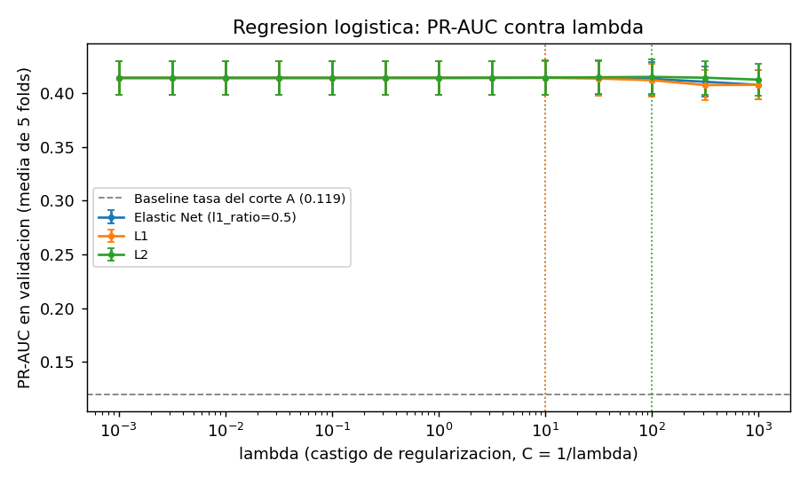
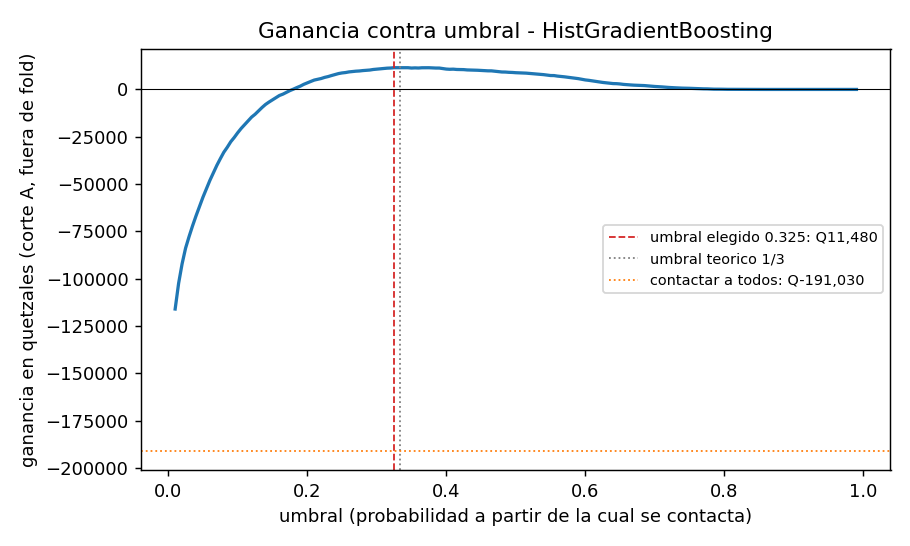
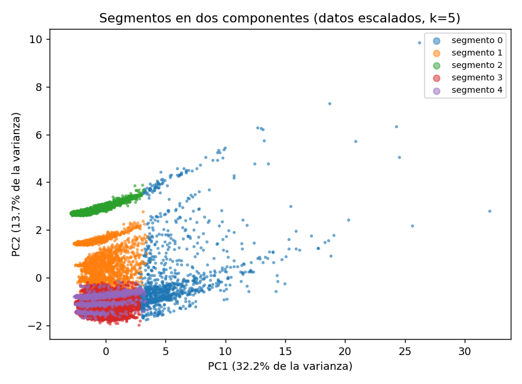

¿Quién deja de usar la red?
| Archivo | Esperadas | Cargadas |
|---|---|---|
| Transurbano | 1,635,788 | 1,635,788 |
| Transmetro | 713,786 | 713,786 |
| MetroRiel | 590,844 | 590,844 |
| Aerómetro | 387,053 | 387,053 |
| Padrón | 77,636 | 77,636 |
| 4 catálogos | 468 | 468 |
| Corte | Población | Positivos | Tasa |
|---|---|---|---|
| A, 1 de julio | 59,491 | 7,095 | 0.1193 |
| B, 31 de julio | 58,113 | 6,387 | 0.1099 |
| C, 30 de agosto | 57,701 | oculta | oculta |
Si usáramos la tarjeta, 2,404 de 10,812 abandonos serían personas que siguieron viajando con otra tarjeta. Con la persona, 1,460 de 7,095 positivos son solo de Aerómetro y no se pueden verificar.
| Modelo | Entrenamiento | Validación |
|---|---|---|
| Tasa del corte A | 0.119 | 0.119 ± 0.000 |
| Días desde el último viaje | 0.402 | 0.403 ± 0.014 |
| Menos viajes en 28 días | 0.254 | 0.254 ± 0.004 |
| Logística L2, λ = 100 | 0.416 | 0.415 ± 0.016 |
| Logística L1, λ = 10 | 0.415 | 0.414 ± 0.016 |
| Logística Elastic Net, λ = 10 | 0.415 | 0.415 ± 0.016 |
| HistGradientBoosting | 0.544 | 0.426 ± 0.015 |
| Random Forest | 0.533 | 0.424 ± 0.014 |
Mismos 5 folds del corte A para todos.
Usamos PR-AUC porque solo abandona el 12% y la Agencia va a contactar a los primeros de la lista. Mide qué tan arriba quedan los que se van y no se infla con los negativos fáciles. Su piso es la tasa, 0.119.
Solo con los días sin viajar ya se llega a 0.403. La logística apenas le gana y el boosting gana en los 5 folds.

Lo que más sube el riesgo, con variables escaladas:
| Feature | Coeficiente |
|---|---|
| Días desde el último viaje | +0.76 |
| Viajes en 28 días | +0.33 |
| Perfil general | +0.23 |
| Perfil estudiante | +0.10 |
| Viajes en 14 días | +0.09 |
Lo que más lo baja son los días activos, con -0.63, y los viajes de la última semana, con -0.52.
Importancia por permutación en validación:
| Feature | Baja en PR-AUC |
|---|---|
| Días desde el último viaje | 0.246 |
| Perfil | 0.015 |
| Tendencia en 14 días | 0.010 |
| Viajes en 14 días | 0.009 |
| Viajes en 7 días | 0.008 |

| Validación A | Test B | |
|---|---|---|
| PR-AUC del boosting | 0.426 | 0.386 |
| Línea base de recencia | 0.403 | 0.359 |
| Línea base de la tasa | 0.119 | 0.110 |
| ROC-AUC | 0.841 | 0.839 |
| Ganancia | Q11,480 | Q7,550 |
Lo corrimos una vez el 3 de noviembre, en el commit 3a6bb7c. El script no deja correrlo otra vez.

| Segmento | Personas | Abandono |
|---|---|---|
| Viajeros intensivos | 5,461 | 0.019 |
| Usuarios de MetroRiel | 10,082 | 0.125 |
| Usuarios de Aerómetro | 10,028 | 0.145 |
| Usuarios de Transurbano | 25,482 | 0.118 |
| Usuarios de Transmetro | 8,438 | 0.149 |
Elegimos k = 5 porque es el segundo pico de silueta y ahí se aplana el codo. Con k = 2 solo se separaban los intensivos. Las dos componentes explican el 45.9%.
Acciones: recarga condicionada para Transmetro, transbordo gratis para Aerómetro, pase semanal para MetroRiel y nada de presupuesto para los intensivos.